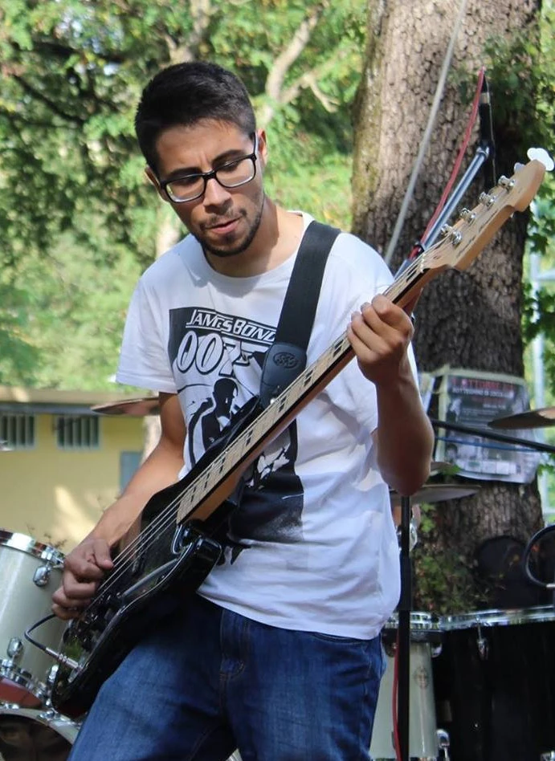

Presentazione

Mi chiamo Omar Jarid, ho 32 anni e sono laureato in Informatica presso l'Università degli Studi di Ferrara.
Ho lavorato come sviluppatore software per diverse aziende, principalmente come sviluppatore Android.
Attualmente sto imparando lo sviluppo front end.
La mia passione più grande è la musica, in particolare il rock e il metal.
Il mio strumento principale è la chitarra elettrica, ma suono anche il basso elettrico in un gruppo folk.
Mi piace anche comporre musica, ho un progetto musicale solista chiamato Cavaliere della Rosa Rossa.
Competenze
Sviluppo mobile
- Android (Kotlin, Java)
- Flutter (Dart)
Sviluppo front end
- HTML
- CSS
Musica
- Chitarra elettrica
- Basso elettrico